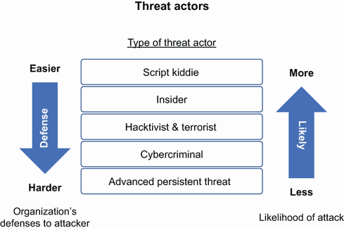
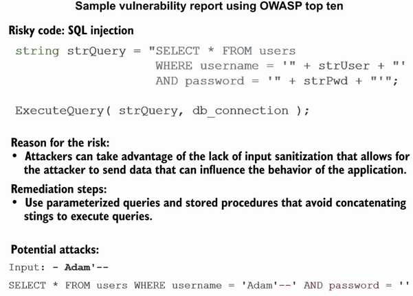
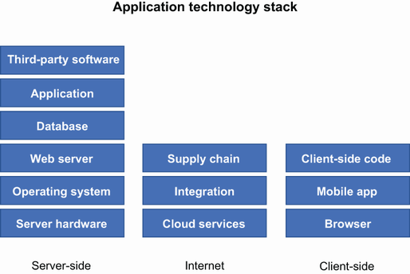

9 Continuously improving the program
Appendix. Answers to exercises
10h 2m remaining
9 Continuously improving the program
Exploring modern and advanced techniques for application security
Supporting future changes in the application security space
Avoiding common pitfalls with an application security program
Your application security program is up and running. It’s humming along. Vulnerabilities are down. Engineers are getting ahead of the security issues that are impacting their application, and things are looking great. This is the point where most application security leaders begin to think about what’s next. Although there will be the desire to just keep going with what the team is doing, security and attackers do not stay still. There is an ever-evolving landscape of security issues, and attacks only get better.
Whereas fighting vulnerabilities should be the organization’s primary focus, your program should be designed in such a way that the regular influx of vulnerabilities should not be cause for alarm. Your program will have the people, process, and technology in place to manage the vulnerabilities to closure within the timelines established by the organization. Even when a zero-day vulnerability comes in that doesn’t have a patch that can be deployed to resolve, you have built the communication channels, you know where your data and applications are, and you have the appropriate run-time protection tools in place to provide mitigation until a fix can be deployed.
Now that vulnerabilities are no longer something to fear, it’s time to look at some more advanced topics in the security space that will help you understand how attackers are thinking about your applications and ways for you to stay ahead of that by building resilient architecture.
There is a very common phase in defense, whether it’s physical or cyber. It goes something like this: “The attacker only has to be right once; the defender has to be right every time.” As systems get more complex with an increasing amount of exposure points, the attacker quickly has a target-rich environment to play in. In chapter 2, I showed the different attackers that are looking for ways into an organization’s applications. Figure 9.1 is a reminder of the threat actors, the likelihood that the organization would face that threat actor, and the organization’s level of challenge in defending against the actor.

Figure 9.1 Threat actors based on likelihood of attack and ability to defend
Although some of these attackers leverage automated tools to infiltrate the organization and their skill level is not high—for example, the script kiddie—other, more sophisticated attackers will use a multitude of methods to compromise an organization. The more advanced the attacker, the more difficulty the organization will have in protecting against the attack. This is where a layered defense will support the organization in fending off most attacks. Although the organization will put the controls in place to protect against an attacker, the attacker will have their own methods they use in order to compromise the organization.
Despite what Hollywood might tell us about how attackers compromise a system, the reality is far more mundane. An attacker is not likely to rappel into your data center, or your cloud service provider (CSP), bypass all your physical security, and slip a USB device into a server sitting on a rack. I’m not saying it is not possible; I’m just saying it is the least likely scenario. Honestly, the far more likely scenario is a hardcoded password or one that is written down or shared and leads an attacker to be able to compromise a system. Attackers will always look for the weakest link or the easiest way in.
MITRE has developed a framework for the various steps that an attacker takes to go from reconnaissance to exfiltration of an organization. This knowledge base is called the MITRE ATT&CK framework (https://attack.mitre.org/).
Note MITRE is a not-for-profit organization that focuses on research and development in support of US government agencies. For our purposes, just know that MITRE supports cybersecurity practices.
The ATT&CK framework covers a broad range of different techniques that an attacker can use, but by no means are the techniques intended to show a complete list or a map of what every attacker does. In other words, attackers will leverage some, all, or none of the techniques identified in the matrix when they are attacking an organization. However, one of the key benefits of the framework is its ability to assist in developing threat models and mitigation techniques that are specific to the way that attackers behave.
The basic ATT&CK framework starts with reconnaissance where the attacker is able to gather information by scanning and searching through public information that might be available about the target person or organization. From the application security perspective, the application will want to reduce information that can be made available about the organization or application by reducing the exposure of their source code or documentation where available. The organization should also ensure that any web server does not provide any information above what is necessary in their HTTP headers (e.g., Server, X-Powered-By, and X-AspNet-Version) and that all non-used ports are closed.
Resource, access, and execution
The attacker will then pivot to gathering hardware and cloud resources to perform their attack, gaining access and executing scripts where practical. This can be accomplished through weaknesses in the infrastructure and hosts that are running, including web, application, and database servers. Once the attacker has gained access to these resources, they will attempt to deploy their tools and scripts to further compromise or gain additional access to other resources. The primary entry point here is through the network where the attacker can land on a host that doesn’t have the appropriate security controls on, such as least privilege access, closed ports, and ensuring that software is patched and up-to-date. Additionally, the organization should monitor for indicators of compromise through logging and monitoring controls.
Persistence, escalation, and evasion
If the attacker is able to gain a foothold on a host, they will then look to ensure that they have persistence on the machine. They can do this through creating new accounts, hiding their activity, setting up tasks and jobs, and modifying the system. They will then look to escalate their privileges by trying to gain access to administrative accounts or system accounts in order to be able to perform more extensive persistence. They will also use this to evade defensive techniques that the organization may have in place by modifying processes and workflows, like authentication workflows. Where possible, they will modify the system and the tools used to monitor and block their activity. Again, the organization will want to focus on ensuring that their defenses include secure configuration on their hosts, servers, and network appliances, as well as having the appropriate logging and monitoring in place to detect malicious activity. Hashing is also a key capability that can be used to ensure that files are not tampered with—especially log files since many attackers will look to hide their activity.
Credential access and discovery
Part of the escalation of privilege will be attempts to gain access to credentials or account access by impersonating another account. Once the attacker is able to gather credentials, they will enter a discovery phase where they attempt to locate services and information across the organization’s systems. If they are able to do this without setting off alerts, they can gather a fair amount of information.
Note Think about the accounts you use on your database servers or web servers, and imagine that account being in the wrong hands. What can that attacker do?
Lateral movement and collection
The attacker then will look to move laterally across the network or organization. This means that they will find other openings in the organization through phishing attempts or using tools to take over sessions or remote services. This allows them to move from a less juicy target to one that has more potential for additional compromise. The attacker will use the machines that they were able to compromise to begin to siphon data from them or the network. It’s possible that the attacker will look for data on the machine itself that they might be able to steal, as well as on some of the machines that may have access to the network traffic in which they can sniff and potentially grab more data.
Command and control and exfiltration
Having all this data is useless unless the attacker knows how to get it out of the network. This is where command and control (C2) and exfiltration come in. The attacker will attempt to look for ways to get the data out of the network through obfuscation and encryption where the tools on the network may not be able to determine what is being removed from the network. Attackers are also patient and know that certain activity will raise alarms, like the sudden and massive movement of large datasets from the network. They will attempt to hide any exfiltration data by staying below network throughput thresholds so as not to raise any alarms and moving data between different servers to further obfuscate their activity.
In the last phase, the attacker attempts to disrupt the system through destructive methods such as data wiping, destruction, or encrypting; account access removal; or corruption. The goal of the attacker is to interrupt the availability or create an integrity compromise.
Most pieces here in the ATT&CK matrix (figure 9.2) are mitigated through vigilance, tooling that is special purpose built to look for these issues, and a strong team of defenders. However, the applications built by the organization have to take some responsibility as well. Leaving vulnerable code in an application open to an attacker is often too easy of a target to pass by. A simple set of unencrypted credentials in a configuration file, a private key hardcoded in source control, of a default password on a web server are all means of entry for an attacker who might already be on your network.

Figure 9.2 MITRE ATT&CK matrix
Similar to the MITRE ATT&CK matrix, the Cyber Kill Chain framework (http://mng.bz/aPdj) was developed by Lockheed Martin and was intended to provide a quick glance at the types of attackers and their process for compromising a system. The usual suspects exist as they did in the ATT&CK matrix. However, in the Cyber Kill Chain, there are several tactics, techniques, and procedures (TTP) that are highlighted to give the defender an idea of where an attacker may look to strike.
The first step in the Cyber Kill Chain is reconnaissance, where the attacker will attempt to gather information on the organization, system, or network that they are attempting to compromise. This is often done through gathering public information on the organization, perhaps through online profiles on professional sites, through information spread at conferences, or just through basic searches online. However, the reconnaissance techniques can get more sophisticated by leveraging tools that can crawl the internet looking for openings in the target system. Shodan is a prime example of a reconnaissance tool used for this purpose.
Once the attacker has identified enough information regarding the target, they will begin to develop the exploit into a payload that can be delivered to the target.
Definition An exploit is a piece of code that takes advantage of a vulnerability. A payload is what delivers the exploit to the target.
The attacker may have to go through several iterations of obfuscation in order to evade any detection tools that are in place at the organization. Often, they will craft specific exploitation code that is custom to the organization in order to slip past the defenses. Next, the attacker is able to deliver the malicious payload with the exploit to the target. This can be through an email with a malicious attachment, USB device, social engineering, or using a weakness in an application to have a user at the organization redirected to an attacker-owned site that can then download malicious code. Given that systems today are more and more complex, the opportunity to slip a payload into the organization are many.
Once the exploit can get through the defenses and deliver the payload, the initial exploitation of the system is complete. This allows the attacker to install software to the system that will give the attacker the opportunity to further exploit the system, pivot to another machine, siphon data, interrupt processing, or simply monitor traffic and activity.
Command and control and actions
The last steps are the command and control (C2) activity that gives the attacker the ability to send data to and from the attacker-controlled C2 servers. These servers act as a platform for the attacker to deliver additional commands during the compromise. Finally, the attacker will have remote access to the target system through these TTPs, where they will be able to perform their original goals for the compromise.
So, what does all this have to do with development security? Organizations have a reliance on perimeter tools to identify and uncover indicators of compromise (IoC) as they are seen in the network, and the developed application is the most exposed part of their operations. Consider an organization that creates SaaS products that are deployed to a CSP and accessed by their customers around the world. The most accessible part of the organization’s offering is not the hardened infrastructure in the CSP; you could argue that the organization can misconfigure this and leave an opening, but the most likely scenario is an unresolved vulnerability in the application that is being exposed to the customers. It is therefore imperative that the organization understands how an attacker can leverage an exposed vulnerability in an application and use that to further compromise the organization. Understanding the TTP is one thing, but what about the specific types of vulnerabilities?
Threat catalogs are useful in identifying the various threats that can impact a system. The simple way to think about threat catalogs is that they are a method of identifying generic security threats. They can be specific to a type of architecture, or more broadly across technology. The OWASP Top Ten (https://owasp.org/Top10/) is considered a threat catalog, as it identifies the ten most prevalent security threats to web applications. OWASP also maintains several other top ten style lists related to mobile applications and APIs. MITRE maintains a catalog called the common weakness and enumeration (CWE). The MITRES’s Top 25 is a listing of 25 software and hardware weaknesses that can lead to a system breach. OWASP has specific focuses like web and mobile applications, whereas the CWE is more broad-based so that it is more generic and can be applied to a broader range of systems regardless of how they are accessed.
Note NIST SP 800-30 and ISO27005 also list threats in a catalog. These are used more broadly within information security and are not scoped specifically to technology as in the MITRE CWE and the OWASP Top Ten lists.
The goal of these threat catalogs is to provide a means to identify the various threats that can be found in the systems and the implementation of the systems. They are not meant to show what the only possible threats are, but instead are there to show some of the common and well-known threats that exist. Organizations can add and remove additional threats as they see fit or as the landscape changes for that organization, the technology they use, or industry they are in.
If you are running an application that is accessed over the internet, chances are you are exposed to the various issues that are found in the OWASP Top Ten web application security risks for 2021. Table 9.1 outlines the most prevalent security issues that impact a web application.
Table 9.1 OWASP Top Ten web application security risks for 2021
Using the top ten to categorize vulnerabilities
The Top Ten web application risks can be applied in several ways. One of the primary methods of using the Top Ten is to categorize vulnerabilities that are found in penetration testing or scanning tools. Whether it’s a penetration test or output from a scanning tool, the findings will leverage the OWASP Top Ten to describe the issue, provide guidance on how to prevent the issue, and describe methods of attack that can leverage the vulnerability as described in the sample report in figure 9.3. This helps with a common taxonomy for how to describe a vulnerability, which helps cut down on confusion and provides a reference point for more information.

Figure 9.3 Sample scan report showing an SQL injection finding
Using the Top Ten for penetration testing
Penetration testers use many tools and methods for testing, but they can also use the OWASP Top Ten as guidance into their activities. For example, a penetration tester may be tasked with testing the frontend UI of a web application. They can review the OWASP Top Ten as a starting point as they test the application looking for weaknesses. The guidance provided by the OWASP Top Ten can also help the tester create automated scripts or hone existing tools. Last, the tester can use the OWASP Top Ten as a reference when creating the output report with the results from their test. This additional information will help the receiver of the report understand what the risk is, how it can be leveraged, and more importantly, how it can be resolved.
Using the Top Ten to determine tool efficacy
The OWASP Top Ten can be used to determine the efficacy of security scanning tools that you may be evaluating or running. When vendors are showcasing the capabilities of their tool—for instance, a SAST tool—they will often describe how the tool discovers vulnerabilities related to the Top Ten. It is often prudent to ask a vendor, if they don’t offer this information up, whether they detect the OWASP Top Ten. However, this should never be the sole criteria for determining the effectiveness of a scanning tool.
Using the Top Ten to create requirements
The OWASP Top Ten can also be used in developing security requirements for developing software. This is helpful considering that security requirements are often not integrated early in the development life cycle due to the fact that security requirements are not written by the same team that writes the functional requirements. The security requirements are often written and managed by the application security team.
OWASP’s Application Security Verification Standard
OWASP maintains a project called the application security verification standard (ASVS), which is a list of statements that can guide a tester on how to verify the security of a web application. For instance, one of the statements is “Verify that a password strength meter is provided to help users set a stronger password.” These verification statements use the OWASP Top Ten as well as the community of security practitioners that helped develop the ASVS (http://mng.bz/gRVe).
Something like the OWASP ASVS can help the application security team and engineering teams understand what requirements should be written to cover the security concerns for the application. However, the ASVS is written for the benefit of the tester of an application by using the term verify before every statement. Using this language means that in order to derive true requirements from it, the team will need to change the language from a testing statement to a functional requirement.
ASVS statement—Verify that a system generated initial activation or recovery secret is not sent in clear text to the user.
Security requirement—When the system generates an initial activation of a user, it will not send recovery secrets in clear text.
This is a simple transformation of the testing statement to a requirement. Each organization will have a separate approach, terminology, and structure to how their requirements are written. However, this approach cuts down on a lot of the guesswork for requirements writing and provides a listing of security guidance that is backed by a community of security professionals through OWASP.
Last, the OWASP Top Ten can and should be used to determine the threats while performing review activity. This can be achieved either formally or informally. An informal approach would be to keep the OWASP Top Ten close by as reference while reviewing a design or code review and then simply asking whether the design or code has protections against broken access controls, cryptographic failures, injection attacks, and so on, through all ten vulnerabilities in the list. In a more formal manner, the organization may take the approach of having a checklist and required proof that the design or code is free from the vulnerabilities in the Top Ten. The proof could be a clean scan report from a security scanning tool or a penetration test that was completed that shows the lack of vulnerabilities.
Similar to the OWASP Top Ten risks, MITRE created a threat catalog called the common weakness and enumeration (CWE) Top 25. As I stated previously, this list goes beyond the OWASP list of just web application vulnerabilities and extends to a broader category of vulnerabilities that impact an overall system. It may seem like some of these are out of scope in the application security space; your application runs on a system that could be exposed to these vulnerabilities, and in some cases, your application may be the window into those systems. For example, an injection vulnerability in your application that allows an attacker to attempt a remote code execution could imperil the system or provide the attacker an opportunity to pivot to another system with additional weaknesses. Inversely, a weakness in a system could lead an attacker to compromise or change data that is used by your application. For example, think of a case where the database has a vulnerability that allows an attacker to have privileges to alter the data in the database or take it offline. This would have a huge impact on the application that depends on that data. The CWE Top 25 (http://mng.bz/epD9) is in order of prevalence and severity. Some examples from the Top 25 are
Improper input validation—The application receives data from a user that does not go through proper validation and sanitization, allowing for an attacker to influence the behavior of the application.
Cross-site request forgery—The attacker is able to get the server to make an unintentional request to a resource due to the lack of validation of the request.
Exposure of sensitive information to an unauthorized actor—The exposure of sensitive information to an actor that does not have permission to view the information.
Similar to the OWASP Top Ten, this catalog of the most prevalent security issues found in software can be used to measure the effectiveness of the software security tools that are being used in the organization. Most security tools will provide a corresponding CWE number associated with its finding, which will provide more information on what the issue is and how to resolve it. The Top 25 can also be used when reviewing code, design, or architecture by looking for the weaknesses during the review.
As an example, we can look to Superior Products where Dashing Danielle has been asked to review code in the Stuff-For-You application. The developer created a new integration with a third party that requires the exchange of XML through an authenticated web service. Dashing Danielle sits with the developer to review the code and ensure that proper security is in place. She focuses her attention on several of the MITRE Top 25 issues that would be relevant in this case, namely the ones associated with XML, credentials, authentication, and authorization. With these in mind, Dashing Danielle asks to see how the XML is being parsed and realizes that there are no checks being done to ensure that the application does not access files on the web server that are not supposed to be exposed. She suggests that the developer add an allowlist for the only files and locations that should be accessed by the XML parsing function when it processes XML input from the third party.
The MITRE Top 25 can also be used as guidance in penetration testing and other manual security tests where the tester can use the list to identify weaknesses that they should be looking for. In this effort, MITRE provides information for each CWE they list that contains examples of how to exploit the weakness, and detailed technical information on mitigations throughout various stages of the development life cycle. A tester, whether doing a penetration test or informally testing the application, can use this information to guide their activity and build test cases to evaluate whether the application is exposed to a given weakness.
Other threat catalogs exist, and new ones are being developed with the intention of providing organizations the ability to focus on a small set of high-impact weaknesses and vulnerabilities. They are not meant to be a complete list. As in the case of the MITRE CWE, there are many more CWEs associated with system weaknesses. Additionally, the OWASP top risks are not the only ones that can impact a web application. However, these short lists can help the organization prioritize their efforts to remediate. More importantly, the information that is available in these catalogs can enable the developers and architects creating new features to build security into the product early in the life cycle.
One of the biggest challenges that the application security team, or any security team, has is staying in front of the engineering organization and their desire to move fast with new technologies. Often the technology being pursued can be bleeding edge with little to no supporting documentation or empirical evidence of its effectiveness. However, the desire to find something that fits a need and leverage it as quickly as practical are the hallmarks of a fast-moving engineering team. Throughout this book I have covered the ways that development teams move rapidly to deliver value to their customers. Whether through the Agile methodology or by using a continuous integration/continuous deployment (CI/CD) pipeline, the development team can deploy software multiple times a week, a day, or an hour. With this rapid development and deployment, the application security team often finds itself overstretched and outmatched.
This has implications for any team that wants to ensure that security is built into the development process and life cycle. The challenges arise when the application security team falls behind in terms of the skills that are being used by the development teams. This can relate to the coding languages being used or the deployment technology that is leveraged to deploy software to an environment.
Note Although the numbers vary widely, there are hundreds of programing languages in existence today. There are a small number, comparatively, that make up the widest share of usage, but the opportunity still exists for nonstandard languages to be used in an organization. This can put the application security team on their heels if the organization does not require standardization on languages used.
The application security team, when it does have staff with experience in software engineering, can find that the experience is outdated with some of the newer software development languages that exist. You can refer to chapter 5 on the makeup of an application security team, including how staff with development experience fit into the team. This may not seem like a big deal, considering that the application security team is often not expected to write code or develop software. However, there are two issues here. One is the fact that the application security team will lose some of its authority when performing code reviews. Without working knowledge of the language, it becomes more difficult to identify issues in the code that could become security vulnerabilities. Second, when making recommendations on remediation or when interpreting results from scans or penetration tests, the application security team will want to provide examples in the language that is being used. Ideally, the example will be specific to the actual application to leave as little room for interpretation as possible.
So how does the application security team stay ahead of this? The short answer is through training. As I mentioned, the application security team members do not need to develop software, but simply staying up-to-date with the coding languages that are being used in the organization, attending training, and upskilling where necessary. The application security team should also look to hire new staff with the desired skills. Where the current staff can train to learn new skills, hiring a new employee with the skills you are looking for is a way to shortcut that skill gap. Of course, this depends on your team’s ability to hire truly qualified people.
Keeping up with the software languages is often not enough. There is also the potential skill and tool gaps when a given technology decision is made in engineering without the consultation of the security organization. This can occur with regard to things as simple as the source code management (SCM) tool that is used to manage the source code, the integration tool used to build the software and integrate testing tasks, or the deployment technology and tools used to deploy to the running environments.
The primary concern with these technology choices is that the security tools owned and operated by the security organization may not integrate well or may need additional work to integrate with. In some cases, it may just require a change in the connector technology between the security tool and engineering tool. As an example, the organization may be looking to adopt a new SCM tool. The application security team will need to review their current tool chain that they use in the development life cycle and understand the effort required to integrate with the new SCM. In most cases, this particular example would only impact the SAST, the IaC scanner, and the SCA tools, as these tools scan code in a nonrunning state and integrate well with SCMs.
An additional concern is with the security tool’s ability to work with particular technology stacks and languages. This is more evident with tools like SAST where, in order to perform the scan of code in a nonrunning state, the SAST tool needs to have the ability to understand the language and the patterns of that language. This will often limit the SAST tool’s ability to scan many languages and instead focus on a subset of a handful of languages. With this limitation, the application security team can find itself with a SAST tool that is not capable of scanning a language that is brought into the organization. This is not limited to just scanning tools. Containerized or virtualized technologies can often make it difficult to operate agents with the appropriate visibility into the running application. This limitation means that security tools that require agents to be installed may not work in a container or virtual machine. This can force the application security team to review other options for tools that exist that may offer that support or look for other compensating controls.
Last, the technology being chosen could be beyond the expertise of the application security team, which reduces their ability to provide oversight and guidance to the engineering organization. Nothing made this more evident than the move to cloud by many organizations. Most application security folks prior to the great cloud migration were focused on protecting software that was operated in the organization’s own data center. The migration to cloud brought on an additional level of complexity, where the engineering teams could now select services from the CSP and have code running in minutes with worldwide access. This is pretty freeing for engineering teams, but extremely frightening for the security folks who need to attempt to provide protection. This means that application security teams have to suddenly become well versed in cloud or leverage the knowledge of their counterparts in engineering to help solve security problems.
Once again, training and hiring for the needed skill set can help close the gaps when it comes to missing technology expertise. However, the application security team should get their hands dirty on the technology as well. This can be done by being tightly coupled with the engineering teams during proof of concept (POC), where the application security team has the chance to raise questions and concerns in order to have them addressed. They will also have the opportunity to kick the tires on the product to give them a better understanding of how it works and how it can integrate with their current tools.
Budgets can bring into reality the limitations that an organization has when it comes to addressing skill sets. Many organizations cannot simply go out and hire staff with the proper skill set or send their staff to training in order to learn new skills. As with most things in application security, the team will have to get creative with their approach in addressing the technology gaps between application security and the engineering organization.
The application security team has several options for addressing this gap, and one of the easiest ways is to ensure that they are part of the technical conversations, planning sessions, and roadmap building. Being a part of these forums allows the application security team to be present to not only represent the security interests of the organization, but to also learn from the engineering organization about changes and upcoming technology decisions as they are being made. Knowing what the engineering organization is working on, what their goals are, and what their strategy is goes a long way in developing ways to integrate security.
Building a partnership with the engineering organization
An approach to advance this partnership is to ensure that application security has built and maintains relationships with their counterparts and decision makers in the engineering organization. I’ve found that doing something as simple as sharing the application security roadmap with the CTO or business leaders helps foster an exchange of ideas and opens up the opportunity for the application security team to solicit feedback on their direction. It also becomes easier for the application security team to request technology and business roadmaps from their counterparts to better understand where the organization is heading. Some things that the application security team will want to look out for in these roadmaps include the following:
New products being presented by the business that will need SDLC security integration.
New approaches or technologies that alter the way that software is developed or deployed to an environment.
Consolidation of products by the business, which can mean efficiencies but also the carryover of technical debt and legacy code.
Sunsetting of products and the timeline for the decommission. This often means that the product could be neglected and lead to security vulnerabilities not being resolved.
Understanding these data points will help the application security team align their plans, tools, processes, and roadmaps to the organization’s own path forward.
Another method of addressing the skills and tools gap is by ensuring that the tools, processes, and technologies are as fungible as possible.
Definition The term fungible gets used a lot in engineering, usually in reference to staff and the ability to swap engineers in and out of projects because of their skill set. However, tools can also be fungible if they are loosely coupled with the processes and technology in the organization. This allows the organization to avoid vendor lock-in and move to a different vendor should their initial vendor not meet expectations.
A prime example of how having a fungible tool set can help the organization address staying ahead of engineering is when running a run-time protection tool like a WAF. There are various deployment models for a WAF, namely on premises and cloud. In a cloud deployment, the organization can more easily swap vendors or choose a multivendor approach that ensures that you have the ability to move from one vendor to another in the event that pricing becomes a point of contention, or even if technical limitations with one vendor become a factor. However, in general, it is good security practice to remove a single point of failure, in this case a vendor, and be able to move from one vendor to another. There is, of course, switching costs that can be incurred every time you move vendors, as well as the loss of potential bulk savings when using a single vendor. This cost needs to be balanced with the overall strategy and the need for diversity in tools and the ability to scale and leverage different technologies when trying to meet the goals of the engineering organization.
The last point I’ll make on staying ahead of engineering is to find ways to pair up with the people who do actually know what they’re doing and are working in the newer technology that the application security team needs to upskill in. There is a concept called paired programming that is sometimes used in software development teams. The purpose of paired programming is to have two developers working together in a single development environment to develop a solution or a feature. Similarly, it would not be out of place for the application security engineers to take opportunities to sit with a developer who is working with a new technology that the application security team has interest in so that they might learn more about the technology and potentially get a hands-on demonstration of how it works.
Don’t get me wrong, there are a lot of great tools out there to solve a lot of security issues that face an organization. There are tools to uncover vulnerabilities, block them, and auto-remediate them, and don’t forget about the artificial intelligence, machine learning, and blockchain. Needless to say, there is a time and place for tools to be used to address a given use case, but some teams tend to look for tools to solve every problem where there might be a simpler solution.
Bringing in another tool can lead to overlap of functionality and the organization paying for more than it needs. This occurs more frequently when someone in the organization discovers a tool that suits a particular need without regard for the current tools available, or without a plan to unravel one tool in favor of another, which can lead to redundancy. For example, the organization may determine that it has a gap in data classification, which is used to input into a data encryption process that encrypts data based on the classification level of the data. The application security team may solicit a request for proposals that can help the team compare capabilities between multiple vendors. A proof of concept may ensue, and eventually a purchase may be made for a particular tool that provides data classification. Several months after the tool is in operation, it may be brought to the application security team’s attention that there already exists capabilities to meet the need in another tool that has been in operation in the organization. How does the application security team handle this?
One approach to identifying the abilities of your tools is to build a simple capability matrix. This requires a firm understanding of the tools that the team has, and what their purpose is. From here, the team can identify the capabilities that it is looking to address as well as what capabilities the tools actually have. A capability matrix can be as simple or as complex as the team needs it to be. One of the primary purposes of a capability matrix is to highlight what the tools can do so that information is readily available when evaluating new tools.
When creating your capability matrix, start with the tool inventory that exists in the team. For the application security team, in order to keep it simple, I’ll use the standard scanning tools that I’ve used throughout the book. Once the tool inventory has been created, the team will want to build out what capabilities those tools have. This does not have to be a complete or exhaustive list, as it is a living document that should be updated as the toolset changes and needs change.
Figure 9.4 is a simple matrix that helps identify the various capabilities that exist in the toolset that the application security team has. It is then used to understand what tools can provide what coverage in the SDLC or the overall defense-in-depth of the software.

Figure 9.4 Capability matrix with application security tools
A similar matrix should be used when comparing the capabilities of a given type of tool. For example, the team may be looking to replace a current scanning tool like the SAST tool or may be evaluating new tools to meet a particular need. In this case, the application security team will want to create a capability matrix that is more granular to the specific tool. Here, the matrix can be used to measure the different SAST tools that are being used or evaluated in the organization. Again, it is important to build out the capabilities based on what is important to the organization. In figure 9.5, some of the tools may be specific to one organization while others may be more concerned with different tools or capabilities. Once the organization’s key capabilities are identified, it is easier to evaluate new tools and determine whether they meet the needs of the organization.

Figure 9.5 SAST capability matrix
Once a decision has been made on a tool or even if the organization already has a tool in place, it’s important to continuously evaluate the effectiveness of the tool and vendor. It’s not uncommon for an organization to be surprised by a feature that exists in a tool that they already have in-house because there was no awareness or communication regarding the feature. Most vendors will keep regular meetings and conversations with the team that operates the tool and ensure that the team is kept up-to-date with changes in capabilities and features as well as support in the usage of those features.
Regardless of the frequency of the conversations with the vendor, it is critical for the application security team to ensure that they ask to see the roadmap for the tools that they have in-house. This will often lead to an update of the capability matrix as the roadmap evolves. For instance, it is not uncommon for a SAST tool to address customer requests for additional language support. Let’s say that the SAST tool in the organization currently supports Java and .NET for scanning of source code; however, the organization has an abundance of PHP code that the vendor currently does not support and therefore leaves a blind spot in the organization. Simply asking for the roadmap for the next several months or quarters may keep the organization from making a decision to move off of the vendor and potentially incur switching costs or loss of productivity.
Note The vendor will often move more rapidly on customer requests when they hear those requests from more than one customer. Additionally, the vendor will often weight their roadmap in favor of the larger accounts. If you’re lucky enough to be a big spender with a vendor, then you are likely to be able to get them to move more rapidly on your requests for additional features.
The last point I’ll make is that the team will want to continuously monitor the effectiveness of the tools they are using to ensure they are getting the value out of it. In chapter 8, I talked about how to measure the effectiveness of the tools you have. With this information, the application security team will want to ensure that it is constantly evaluating this effectiveness and providing that feedback to the vendor. The vendor has every desire to see their tool succeed in your environment, and they will do what they need to do to ensure you have a good experience.
Whether you use a capability matrix or work closely with your vendor to ensure you are getting the most out of your tool, the organization wants to ensure that it is looking at tools with all the information it has available. This means that they are well informed about the current capabilities of their tools and that they are getting the most out of them. There is a saying that I have heard many times: “Don’t go to the grocery store on an empty stomach.” The reason is that you are likely to buy or spend more because you are hungry. I don’t want to reduce making a large purchase with multiyear implications to be as simple as going to the grocery store, but the analogy is similar. Don’t make a purchase without all the information. This leads to chasing the shiny new tool. However, there are times that you’ll go to the grocery store on a full stomach and know that you still need to buy milk.
You have done your due diligence, you have worked with the vendor to get their roadmaps and current features, you have built out your capability matrix both for what the application security team should be doing and for the tools they use to do it, and still you know that there is a gap in the organization when it comes to protecting the software. One example of this is that in many organizations, run-time security of their software is somewhat new—especially in the context of application security. As a function, application security has largely spent its time focusing on code scanning, penetration testing, and finding vulnerabilities early and often. This is the shift-left approach to application security.
Shifting to the right means that more effort is being placed later in the SDLC. Specifically, run-time tools like WAF and RASP are gaining traction. Although each of these has been around for quite some time, many organizations are just now beginning to operate them or are in the early stages of integration. This is where an organization has a greenfield for finding a tool to fit an open need.
However, it is still critical for the organization to ensure that the tool they purchase will fulfill the need of the capability they are attempting to accomplish. This should be done by leveraging the capability matrixes mentioned previously, by running a successful proof of concept and proof of value, and by successfully adopting and integrating the tool. One word of caution is that the organizations will often underestimate the integration of security tools. The uniqueness of security tools is the fact that they are often needed to work with many different engineering teams with varying processes and technologies. A good example of this is with something like an interactive application security testing (IAST) tool. These tools depend on being integrated with the code and the testing suite that is being used by the engineering team. This can vary by teams within the organization, creating a snowflake integration where each team is unique enough that it is difficult to have a standard approach to adoption. Although this is a simple caution, there will always be a need to close a gap in the defense of the organization, and often those gaps need to be filled by a tool. The last thing the organization wants is to have a gap in the defenses that leads to a breach.
Despite their best efforts, organizations still get breached. Granted, it’s not always due to an issue in an application that is developed by the organization, but the application security team will more often than not still need to play a role in any attack or breach that may occur. This is primarily due to the fact that applications need to run on systems that comprise hardware, software, and third-party tools and that have network dependencies. At any time, attackers can compromise not only the application, but also any of the components that the application runs on.

Figure 9.6 Application technology components
Figure 9.6 shows some of the components that create the ecosystem around a developed application in an organization. This is not a complete list and depends on the architecture and technology stack of the given application. Figure 9.6 assumes a data center deployment, as opposed to a cloud-style deployment where the technology stack and the various services used will be different. However, it is imperative that the organization has identified the assets, tools, technologies, and services used in the development and operation of their application.
Definition Asset management is a term that is used in technology that defines the process around managing the assets within the organization. An asset is anything that the organization deems to have value. This can be hardware, software, data, and even people. Often this listing of assets is stored in a database for easier management.
During the case of a potential cyberattack, the first thing that any organization will ask is: “What is our exposure?” Having a solid asset management strategy is the first step in answering that question. However, it goes beyond simply knowing what the organization has and extends into knowing what versions are being used and ownership of assets. Often when a new vulnerability is released that impacts a given library or component, there will be a series of versions that are impacted and ones that are not. Additionally, each version may have different mitigations and remediation techniques that can be leveraged in order to remove the vulnerability. For instance, in the Log4j vulnerability in late 2021 and early 2022, multiple versions were impacted; however, there were several recommendations on how to resolve the issue, depending on version, due to the usage of certain functions in the code. Many organizations were using more than one version, leading to confusion on how best to approach the remediation when a simple upgrade wouldn’t work due to technical or customer constraints. Table 9.2 shows CISA’s recommendations (www.cisa.gov/uscert/ncas/alerts/aa21-356a) on mitigation and remediation of the Log4j CVEs that were collectively known as Log4Shell.
Table 9.2 Log4shell mitigation and remediation recommendations from CISA
As you can see, it quickly became complex to know what versions were impacted by what, and how to provide the remediation and mitigations recommended. In many cases, a simple upgrade to the latest version was not practical. Customers may have to update their own internal code if there was integration with your software where the upgrade to the latest version would be a breaking change. Add in the fact that information was flowing fast, and it was sometimes hard to know what was the right mitigation at the time. This is where robust asset management becomes critical. This enables the application’s technical and business owners to act on relevant information to track the issue to closure.
Regardless of the asset management strategy at the organization, another critical tool to respond to a security event is the ability to contact the right people. One of my mentors when I was getting into security told me that you always want to know who to call when things go sideways. This is not unique to security, since many of us who work in technology know that when you want something done it’s better to call Jill or Bob because they can get it done quickly. It’s the type of thing that makes managers cringe and angry, but it’s the reality of working in technology.
However, this is the type of line of communication that is often needed in time-sensitive events like a production outage or a security event. In some cases, it can be an all-hands-on-deck event that requires staff from multiple disciplines and teams to attempt to bring the event to a resolution. And knowing who to contact and how to get them to engage in the event can be the difference between a well-contained security event and a breach.
The last point I’ll make on preparing for the worst is the need for the security tools that you have in place to aid in the occasion of an ongoing security event. Yes, these tools are good at uncovering security vulnerabilities that can then be sent to engineering to resolve. However, these same tools can be used to identify exposure, test for vulnerability, and validate fixes that are deployed, as shown in figure 9.7. When asset management tools are not available, the application security tools can be used to detect exposure. For instance, if a new CVE is released that shows a popular library used in your organization is now vulnerable to a critical flaw, the application security team can review the tools they have at their disposal to identify the exposure and use of the library. They can then use their testing tools, whether automated or penetration testing tools, to identify whether the vulnerability can truly be exploited. If so, they can then use these same tools to identify whether a patch that has been applied is effective at resolving the issues. Additionally, the application security team, if they are operating the run-time protection tools like a WAF or RASP, can use these tools to create rules, assuming the vendor has not already created and released ones, to block attacks that attempt to leverage the vulnerability.

Figure 9.7 How application security tools participate in a security event
The organization can always apply more defenses, or more tools for detection and alerting, but the hard truth is that all organizations will be breached at some point. Some may have been breached today and don’t even know it. As a security industry, we are moving away from the idea that stopping attackers is the best approach to cybersecurity, and instead we’re moving to the concept of detect and respond. This allows the organization to be resilient to attacks as they happen and have the tools, processes, and people in place to respond accordingly. Consider the way that organizations prepare for production issues. We know that we can’t stop production issues from happening; we can only change the way we respond. I hope this book has shown how you and your organization can respond to software vulnerabilities throughout the development process and that you are more prepared to take on that challenge.
Using matrices such as MITRE ATT&CK and Cyber Kill Chain provides a glimpse into how attackers leverage simple openings in a system or software in order to compromise an organization and lead to a breach.
Threat catalogs are a primary method of measuring the efficacy of a tool and a way to have a common language around known weaknesses and vulnerabilities in software.
Threat catalogs can be used as guidance for quality assurance testers and penetration testers to provide them steps to take to review the security of software.
Engineering teams move quickly, and it is often difficult for the application security team to stay ahead of them. It is important for the application security team to maintain their skills through training and work closely with the engineering teams they partner with.
Tools are used broadly throughout the organization and the application security team. However, the application security team needs to be sure that the tools they are implementing provide the value they are expecting. More importantly, the application security team needs to avoid redundancy in their toolset.
Organizations can only do so much to keep attackers out. It is critical for them to know how best to respond to a cybersecurity event when it occurs. This can be done through processes, tools, and clear lines of communication to the engineering organization and peers in order to respond rapidly and contain a cybersecurity event.
table of contents

Application Security Program Handbook
Published by Manning Publications
queue
1% complete
Approx. 10 hours left
100% complete
checkmark circle
Application Security Program Handbook
100% complete
checkmark circle
6% complete
Part 1. Defining application security
100% complete
checkmark circle
1 Why we need application security
3 Components of application security
Part 2. Developing the application security program
100% complete
checkmark circle
5 Security belongs to ever yone
6 Application security as a service
9.1 Keeping ahead of the attacker
Show More Items
Show More Items
9.3 Staying ahead of engineering
Show More Items
9.4 Stop chasing the shiny new tool
Show More Items
search
Settings
queue